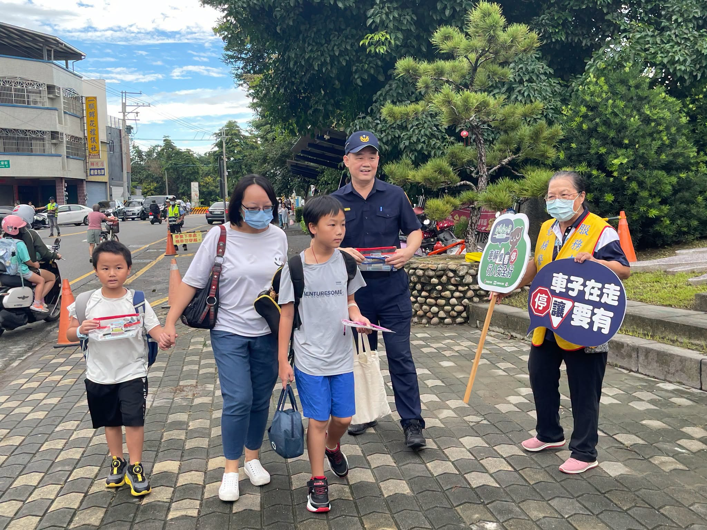
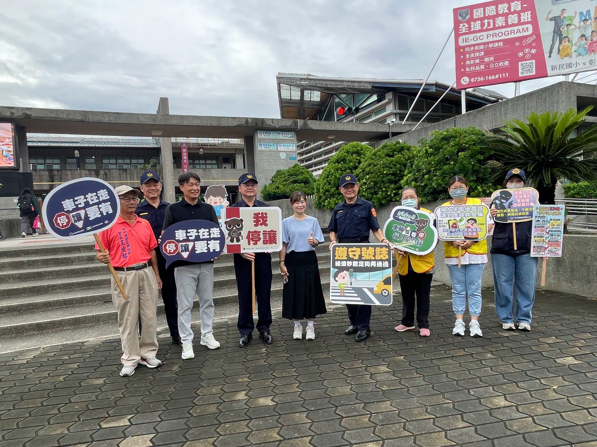

The very first day of the new term also happened to be the start of Traffic Safety Month! Police officers from the Tianzhong Precinct, together with volunteer educators, came to Hsinmin Elementary to give a traffic-safety talk to children returning to school and the parents dropping them off.
So that everyone can leave home safely and come home happily every single day, the police shared four key reminders:
- 🚗Vehicles yield — slow down near school crossings, and let pedestrians and students cross first.車輛停讓：行經校園周邊路口時，請減速慢行，主動停讓行人與過馬路的學生。
- 🚶Pedestrian safety — walk on the sidewalk or stay to the side, cross at the crosswalk, and check for traffic before you go.行人安全：請學生行走於人行道或靠邊走，穿越馬路請走斑馬線，並遵循號誌「看清來車再通行」。
- 🎾Wear it right — when riding a scooter to drop off or pick up a child, always buckle both helmets snugly; never overload or rush.安全配戴：家長騎乘機車接送孩子時，請務必幫自己與小朋友戴緊安全帽，不超載、不搶快。
- ⚠️Stay clear of blind spots — a turning truck or bus has an inner-wheel gap and blind spots, so keep a safe distance and never crowd close.遠離死角：大型車轉彎時存在內輪差與視線死角，請保持安全距離，切勿貼近。


The first step of the new term, safety comes first! Thank you to the police officers and volunteer partners for watching over everyone's safety around the school — let's work together to build a friendly traffic environment where parents feel at ease and children feel happy.
【九月交通安全月 守護學童上學路 🎒👮♂️】
開學第一天，適逢「交通安全月」，田中分局的警察叔叔阿姨們特別會同熱心的宣導志工，到新民國小，為剛返校的孩子與接送的家長們進行交通安全宣導！
為了讓大家每天都能平安出門、快樂回家，警察叔叔特別提醒四大重點：
🚸 車輛停讓：行經校園周邊路口時，請減速慢行，主動停讓行人與過馬路的學生。
🚶♀️ 行人安全：請學生行走於人行道或靠邊走，穿越馬路請走斑馬線，並遵循號誌「看清來車再通行」。
🛵 安全配戴：家長騎乘機車接送孩子時，請務必幫自己與小朋友戴緊安全帽，不超載、不搶快。
⚠️ 遠離死角：大型車轉彎時存在內輪差與視線死角，請保持安全距離，切勿貼近。
開學第一步，安全最重要！感謝警察與志工夥伴在校園周邊為大家的安危把關，讓我們攜手打造讓家長安心、孩子快樂的友善交通環境！
Tap 🔊 to listen · 點喇叭聽發音
Police remind everyone to follow traffic rules near school.警察提醒大家在校園附近要遵守交通規則。
Drivers should yield to students crossing the street.駕駛應該禮讓正在過馬路的學生。
A pedestrian should always cross at the crosswalk.行人應該永遠走斑馬線過馬路。
Always buckle your helmet snugly on a scooter.騎機車時一定要把安全帽扣緊。
Keep a safe distance from turning trucks and buses.和轉彎的大車保持安全距離。
Safety comes first on the way to and from school.上學放學的路上，安全永遠是第一位。
Match the word to its meaning
把英文和中文配對
Matched 配對成功：0 / 6